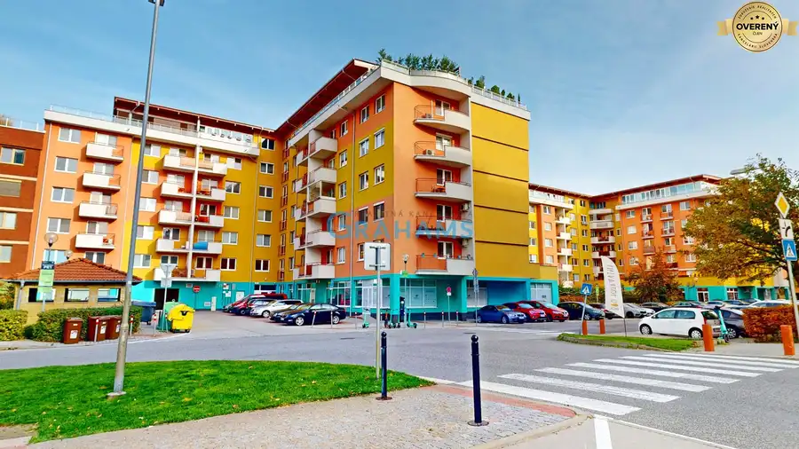
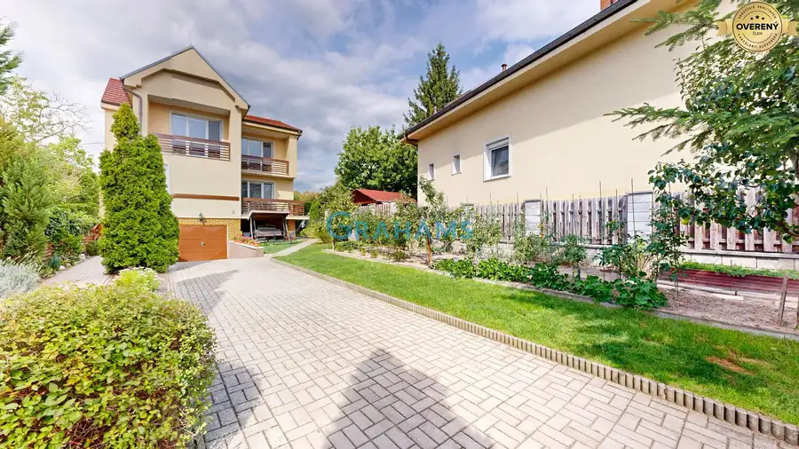

Staromestský 3-izbový byt 132 m², 2 pivnice, Mateja Bela, Staré Mesto
Staré Mesto, Bratislava
- Dispozícia3-izbový
- Plocha132.53 m²
- Poschodie0. z 4
- Stavčiastočne prerobený
- Vlastníctvofiremné
O nehnuteľnosti
Realitná kancelária Grahams
Vám v exkluzívnom zastúpení klienta ponúka na predaj staromestský 3-izbový byt s výmerou 132,53 m² na ulici
Mateja Bela
v mestskej časti
Bratislava – Staré Mesto
. Tento byt v centre Bratislavy – Staré Mesto sa nachádza v historickom bytovom dome v prestížnej lokalite Palisád, v blízkosti Prezidentského paláca, historického centra Bratislavy a Grasalkovičovej záhrady.
Byt je vhodný aj ako investícia na dlhodobý prenájom alebo reprezentatívne bývanie v centre Bratislavy – Staré Mesto.
3D PREHLIADKA:
https://my.matterport.com/show/?m=PuVfv6kb5wL
INFORMÁCIE O BYTE:
• typ: 3-izbový byt
• lokalita: Bratislava – Staré Mesto
• ulica: Mateja Bela
• celková výmera bytu: 132,53 m²
• výmera bytu: 104 m²
• pivnice: 2 samostatné pivničné kobky o rozlohe 28,53m² (22,43 m² a 6,1 m²)
• poschodie: prízemie (1. nadzemné podlažie)
• vykurovanie: vlastný plynový kotol
DISPOZÍCIA BYTU:
Staromestský byt pozostáva zo vstupnej chodby so vstavanou skriňou, samostatnej kuchyne s komorou, kúpeľne, samostatného WC a troch priestranných izieb. K bytu patria dve samostatné pivničné kobky v suteréne bytového domu. Veľkorysá výmera bytu ponúka možnosť úpravy dispozície alebo rekonštrukcie podľa vlastných predstáv. Byt si zachováva charakter typického staromestského bývania s veľkorysou výmerou a vysokými stropmi.
VYBAVENIE A STAV BYTU:
Byt prešiel modernizáciou v rokoch 2010 – 2012 vrátane výmeny rozvodov a rekonštrukcie kúpeľne a kuchyne.
• drevené parkety v obytných miestnostiach
• kuchynská linka
• plynový sporák s elektrickou rúrou
• kúpeľňa so sprchovým kútom
• bezpečnostné vstupné dvere
• vlastné plynové kúrenie
BYTOVÝ DOM:
Historický tehlový bytový dom z konca 19. storočia sa nachádza v centre Bratislavy – Staré Mesto. Dom má jedno podzemné a tri nadzemné podlažia. Bytový dom má tehlovú konštrukciu, typickú pre historické staromestské domy. V suteréne sa nachádzajú pivničné priestory patriace k jednotlivým bytom. Spoločné časti bytového domu, vrátane fasády a krytiny na streche, prešli rekonštrukciou v roku 2013.
LOKALITA – BRATISLAVA STARÉ MESTO:
Ulica Mateja Bela patrí medzi vyhľadávané lokality v centre Bratislavy – Staré Mesto, v oblasti Palisád. V pešej dostupnosti sa nachádzajú:
• Prezidentský palác a Grasalkovičova záhrada
• historické centrum Bratislavy
• Bratislavský hrad
• Hodžovo námestie
• Námestie slobody
• kaviarne, reštaurácie a služby
Lokalita ponúka výbornú dostupnosť MHD a kompletnú občiansku vybavenosť.
STRUČNÉ ZHRNUTIE NEHNUTEĽNOSTI:
Staromestský 3-izbový byt s výmerou 132,53 m² sa nachádza na ulici Mateja Bela v Bratislave – Staré Mesto, v historickom tehlovom bytovom dome v lokalite Palisády. K bytu prislúchajú 2 pivničné kobky a byt disponuje vlastným plynovým kúrením.
Cena: 449.990EUR. Cena zahŕňa kompletný právny servis, autorizáciu kúpnych zmlúv advokátom a asistenciu pri prevode vlastníckeho práva.
KONTAKT:
V prípade záujmu o obhliadku nás neváhajte kontaktovať.
Zodpovedný maklér
Marián Tomko, MBA
Upozornenie: Popis nehnuteľnosti – text a fotodokumentácia sú majetkom a autorským dielom spoločnosti Grahams © Copyright Grahams
Parametre
| Celková rozloha | 132.53 m² |
|---|---|
| Úžitková plocha | 132.53 m² |
| Poschodie | prízemie |
| Počet poschodí | 4 |
| Počet izieb | 3 |
| Vlastníctvo | firemné |
| Stav | čiastočne prerobený |
| Odvoz odpadu | áno - separovaný |
| Plyn | áno |
| Internet | lokálny poskytovateľ |
| Kúpeľňa | sprchovací kút |
| Vykurovanie | vlastné - plyn |
| Lódžia | nie |
| Pivnica | áno |
| Výťah | nie |
| Parkovanie | verejné |
| Postavené z | tehla |
| Zariadenie | nezariadený |
| Zateplený objekt | áno |
| Klimatizácia | nie |
| Energetický certifikát | nie |
| Bezbariérový prístup | nie |
| Okná | drevené |
| Orientácia | severozápadná |
| Dátum zverejnenia | 10. 9. 2026 |
Kde to je
Mohlo by Vás zaujímať

Nebytové priestory5 869 990 €Predaj kanc. priestorov 514 m2, 16 r. stavba, výborná poloha Šustekova Petržalka, Bratislava 3-izbový420.53 m²6. podlažie V exkluzívnom zastúpení klienta Vám ponúkame na predaj kancelárske priestory v polyfunkčnom 16. ročnom objekte na Šustekovej (Šustekova) ulici, na…
Rodinné domy10 629 990 €Veľkorysý rodinný dom s garážou a kompletným podpivničením, Lediny Lamač, Bratislava 5-izbový155 m² Realitná kancelária Grahams vám v exkluzívnom zastúpení klienta ponúka na predaj samostatne stojaci rodinný dom na ulici Lediny v mestskej časti…